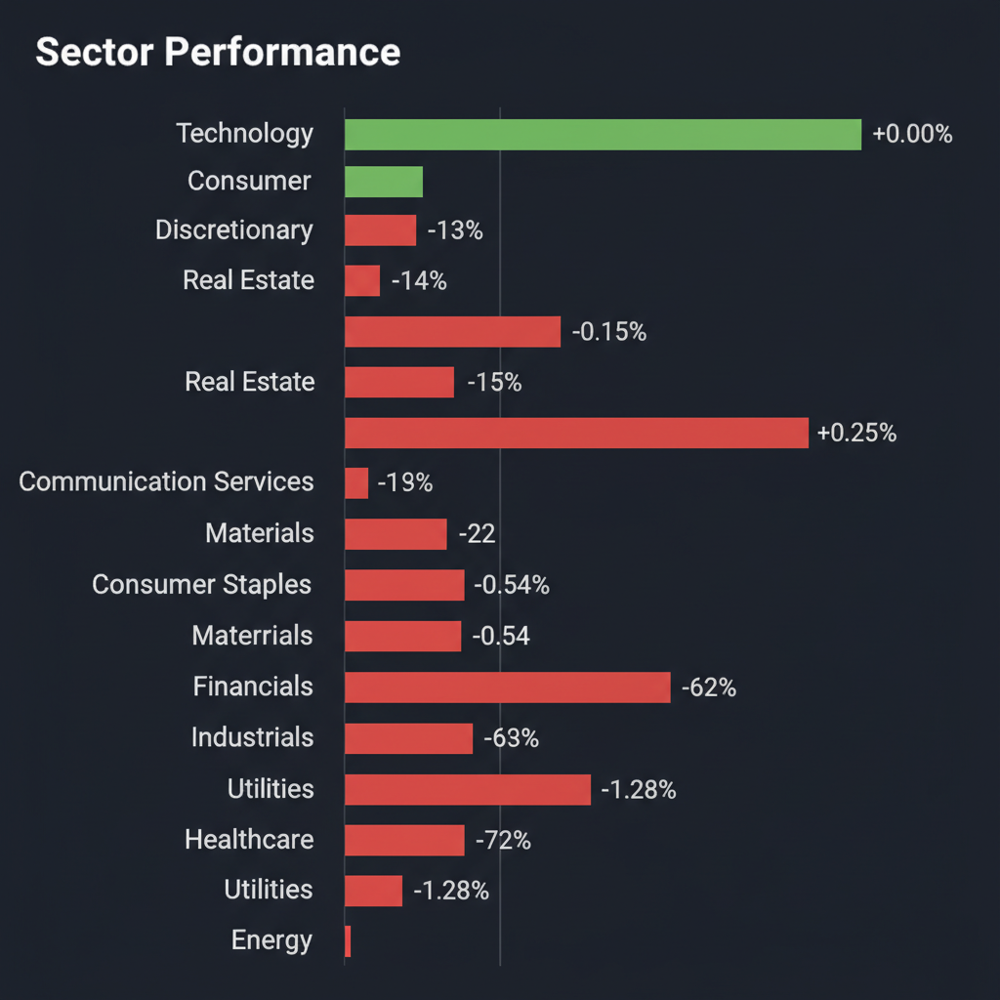
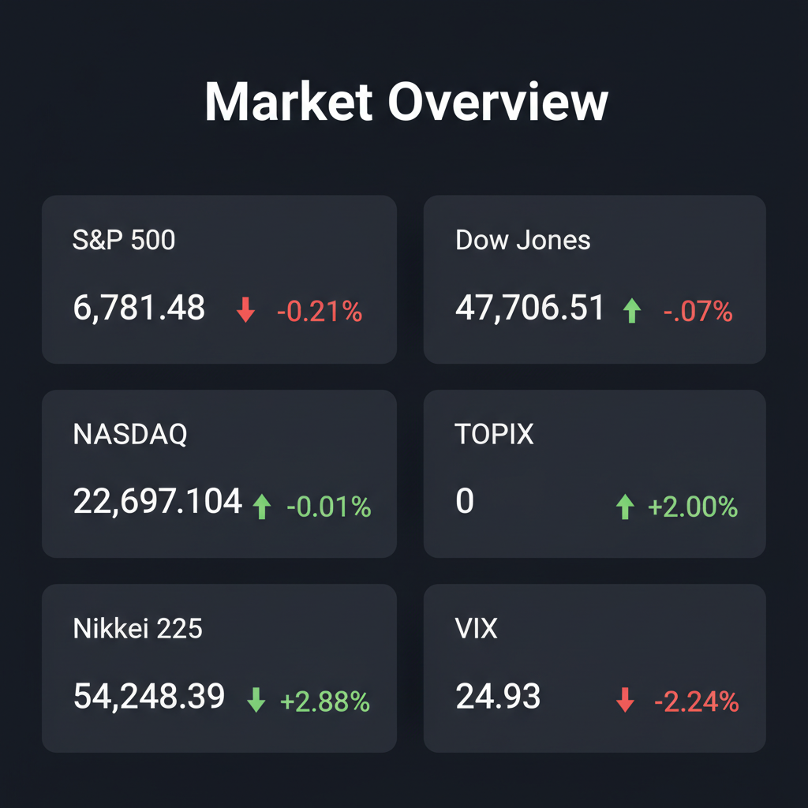

Daily Investment Report - 2026-03-11
Generated: 2026/3/11 8:13:06


投資チームミーティングでの各エージェントの多角的な分析を統合し、投資家向けの最終レポートを作成いたしました。現在の市場に潜むリスクを適切に管理しつつ、次なる成長テーマを的確に捉えるための戦略となります。
1. エグゼクティブサマリー
- 日米の主要指数は歴史的高値圏にありますが、VIX指数が24.93へと急騰しており、水面下で機関投資家が下落リスクへのヘッジを急ぐ極めて警戒すべき相場環境です。
- AI投資のフェーズは「インフラ構築（大型半導体）」から「電力不足の解消・エッジAIによる社会実装」へと移行しており、確固たる財務基盤を持つ隠れた中小型株へ資金をシフトする絶好のタイミングです。
- 本日の最優先アクションは、過熱した大型ハイテク株の利益確定による現金比率の引き上げ（30%推奨）と、相場急変に備えた厳格なストップロスの設定です。
2. 注目銘柄リスト
強気（買い推奨）
- フィックスターズ（3827） [時価総額: 約600億円]: AIや量子コンピューティングのソフトウェア高速化技術を持ち、AIデータセンターの電力不足課題を解決する実質無借金・高ROEの優良企業です。
- ファブリネット（FN） [時価総額: 約80億ドル]: AIデータセンター向け光通信部品の受託製造を担い、巨大な需要を取り込みながらもPER20倍台と割安で、無借金経営による高い安全マージンを誇ります。
- Fluence Energy（FLNC） [時価総額: 約30億ドル]: AI電力需要を支える産業用蓄電池（BESS）の世界トップランナーであり、売上高30%超の成長を維持しつつ見事に黒字化フェーズに突入しています。
- ABEJA（5574） [時価総額: 約100億円台]: 日本の大企業向けにエッジAIやDXの社会実装を裏で支える黒衣（くろご）的企業であり、高い参入障壁とストック収益を確立している黒字企業です。
- エレマテック（2715） [時価総額: 約650億円]: 自動車の電装化や半導体需要を背景に安定成長を続ける豊田通商系の専門商社であり、PBR1倍前後・配当利回り4.5%超と下値不安が極めて限定的なバリュー小型株です。
中立（様子見）
- Recursion Pharmaceuticals（RXRX） [時価総額: 約20億ドル]: NVIDIAが出資し、特許の崖を救うAI創薬の爆発的なポテンシャルを持ちますが、赤字バイオ特有の高金利下での財務リスクがあるため、ポートフォリオの分散枠に留めるべきです。
- ネットワンシステムズ（7518） [時価総額: 約2,400億円]: 国内データセンター構築の恩恵を受ける優秀な内需株ですが、足元の急激な市場ボラティリティを考慮し、25日移動平均線までの健全な調整（押し目）を待ってからのエントリーを推奨します。
弱気（警戒）
- 高PERの赤字SaaS・ソフトウェア関連銘柄 [時価総額: 数億〜数十億ドル規模]: 利益を伴わない期待先行の小型グロース株は、高金利の長期化（Higher for Longer）局面において支払利息が重荷となり、最も激しいバリュエーション収縮の直撃を受けます。
- 中小型の一般消費財・外食銘柄 [時価総額: 数十億ドル規模]: 低〜中所得者層のインフレ疲労と過剰貯蓄の枯渇が顕著に表れており、価格転嫁の限界から今後数ヶ月にわたって利益率の大幅な悪化が避けられません。
3. セクター推奨ランキング
AIデータセンターの稼働に伴う莫大な電力消費という新たなメガトレンドの恩恵を受けると同時に、景気後退期におけるディフェンシブなバリュー枠としても機能します。
GLP-1（肥満症治療薬）やAI創薬といったマクロ経済に左右されない強固なイノベーションが存在し、インフレや消費減速に対する高い防衛力を持ちます。
日銀のマイナス金利解除および追加利上げによる預貸金利ざや（NIM）の劇的改善と、東証のガバナンス改革に伴う積極的な自社株買い・増配の恩恵をダブルで享受できます。
高インフレの粘着性による実質賃金の目減りやクレジットカード延滞率の上昇など、消費者の疲弊が直撃しているためアンダーウェイト（組み入れ比率引き下げ）を推奨します。
金利の高止まりにより、特に商業用不動産（CRE）においてリファイナンス（借り換え）の壁に直面しており、構造的な信用収縮リスクを抱える最も回避すべきセクターです。
4. 今週の注目イベント
- 今週火曜日: 米国 消費者物価指数（CPI）発表（インフレの粘着性とFRBの利下げシナリオを占う最重要指標）
- 今週水曜日: 日銀金融政策決定会合の議事要旨公開および関係者発言（追加利上げのタイミングと国債買い入れ減額ペースの確認）
- 今週木曜日: AIエコシステム関連の中小型テック企業の決算発表（巨大ITの設備投資が下請け企業の収益にどう波及しているかの確認）
- 今週金曜日: 米国 雇用統計発表（労働市場の底堅さと、賃金インフレを通じたスタグフレーション・リスクの検証）
5. リスク要因
- VIX指数の異常な高止まりとダイバージェンス: 指数が最高値圏にある中でVIXが24.93に達している事実は、機関投資家がオプション市場でテールリスク（急落）へのヘッジを急いでいる危険な兆候です。
- AI投資（CapEx）の期待剥落ショック: 市場を牽引する巨大IT企業による巨額のAI設備投資に対し、実際の収益化（マネタイズ）の遅れがデータとして現れた瞬間、市場全体を巻き込む強烈なマルチプル・コンプレクション（バリュエーション収縮）が発生します。
- 日米金利差の逆回転と「円キャリー・クラッシュ」: 米国の景気減速によるFRBの利下げと日銀の利上げが同時進行した場合、急激な円高への巻き戻しが発生し、日本株を牽引してきた海外投資家の資金が一斉に流出するリスクがあります。
- インフレ再燃と商業用不動産リスク: サービスインフレの高止まりによりFRBが利下げを見送った場合、商業用不動産ローンを起点とした米地方銀行の信用不安が再燃し、実体経済へのハードランディングを引き起こす恐れがあります。
6. アクションアイテム
- 現金比率の即時引き上げ: 相場の急激なボラティリティ拡大に備え、利益の乗っている大型株を一部売却し、ポートフォリオ内の現金または短期米国債の比率を最低でも30%に引き上げてください。
- 厳格なトレーリングストップの設定: 現在保有しているすべての買いポジションに対し、直近の押し安値、または20日・50日移動平均線の少し下の水準に、機械的な逆指値（ストップロス）を設定してください。
- ポートフォリオの重心移動: バリュエーションに安全マージンのない大型ハイテク銘柄から資金を抜き、実質無借金で営業利益率が10%を超える「AI電力需要・インフラ関連」のディフェンシブ中小型株へ資金を移動させてください。
- テールリスク・ヘッジの構築: VIXがさらに急騰するパニック局面に備え、S&P 500に対するプットオプションの購入など、ポートフォリオ全体の保険となるポジションを検討してください。